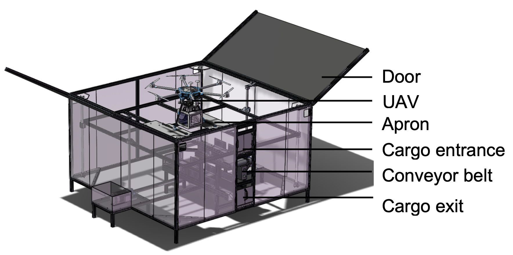
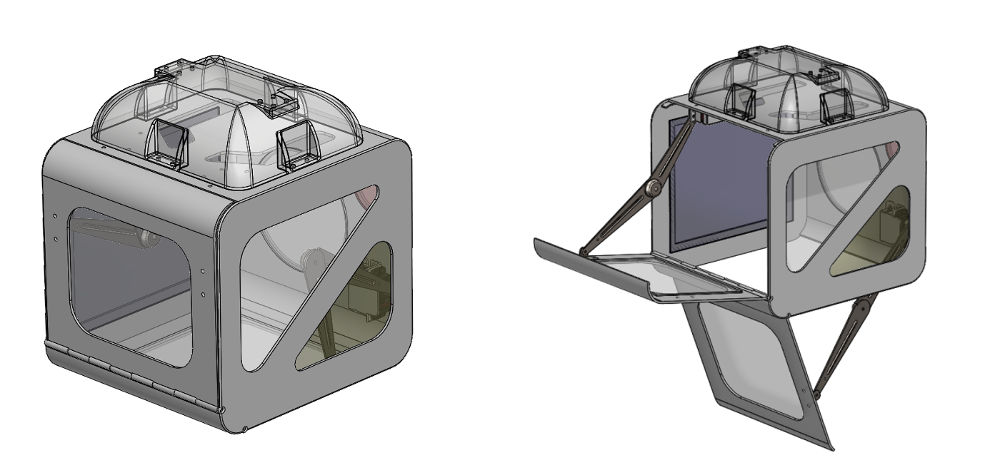

Research and Deisgn of Unmanned Automatic Logistics Station
Shanghai Jiao Tong University, Research, Shanghai Undergraduate Innovation Program
Jun. 2021 - Aug. 2021
Abstract
In recent years, the express delivery industry in China has been flourishing,
and the unmanned logistics system has become a demand. Based on DJI's M600 unmanned aerial vehicle (UAV) model,
this project conducts research and design on an unmanned logistics UAV station from three aspects:
door opening and closing, UAV containment, and unmanned transportation of goods.
The design of this station is an important part of the overall concept of an unmanned logistics system, and has achieved intial results: it is
capable of containing, lifting, and sending to take off a fully loaded M600 UAV model (15 kg) and finishing unmanned transportation process of the loaded goods.

Overall design of the UAV station. The design focuses on three functions: opening and closing of the door, containment of the UAV, and
unmanned transportation of goods.

Design of the UAV loading carbin for goods. The cabin has two doors. The side door is for loading in the goods, and the bottom door loads out the goods.

Demonstration of the goods transportation process. The good on the conveyor belt is to be loaded in the carbin hanged on the UAV.
My Contribution
◊ As the leading system engineer, directed a project team with more than 30 members.
◊ Finished the mechanical design and manufature of the station framework, and led the testings of the prototype.
◊ Acted as the leading presenter of the final project defense and the first author of the thesis.